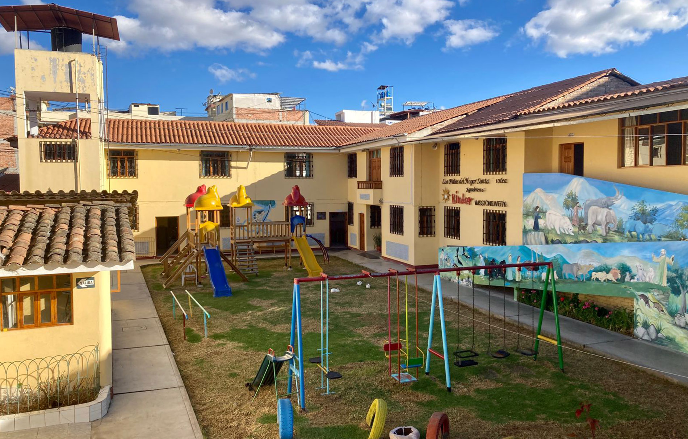
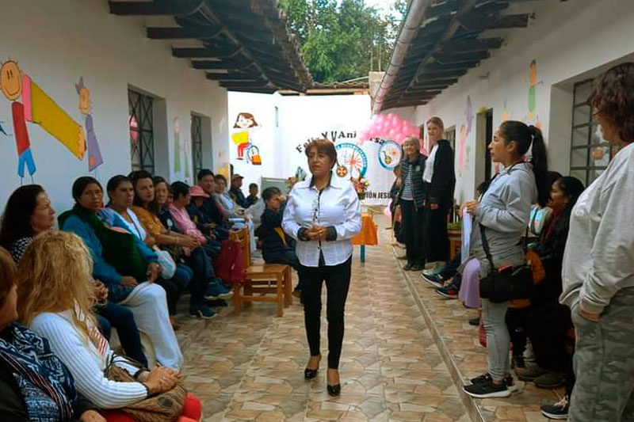
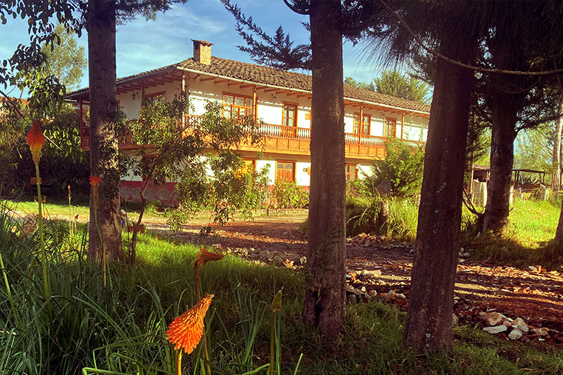
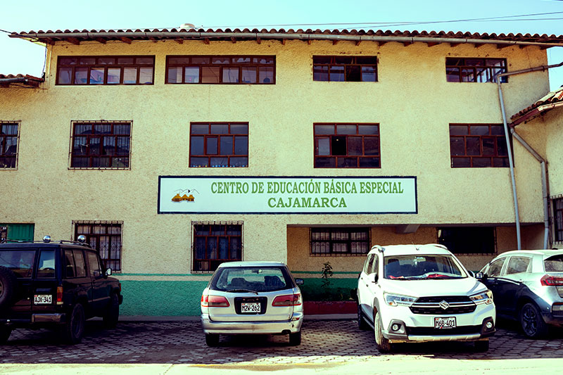
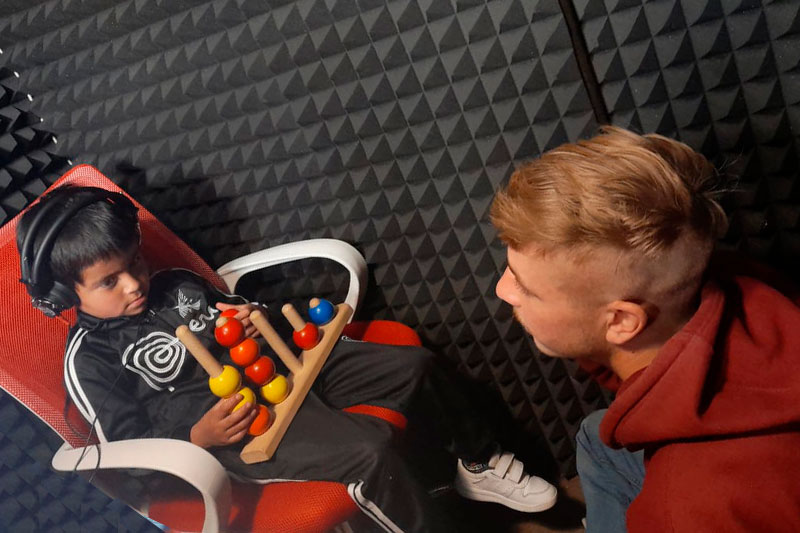
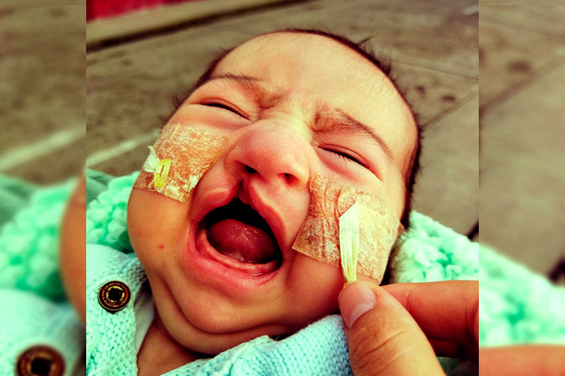
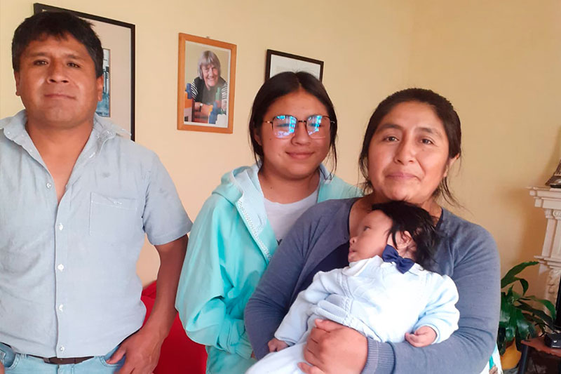
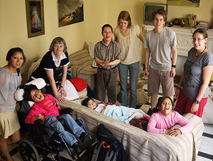
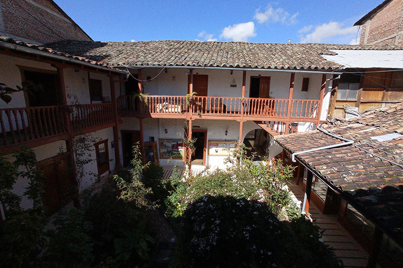

Hogar "Santa Dorotea"
En nuestro Hogar, creamos un ambiente acogedor y familiar para 30 niños y jóvenes con discapacidades. Estos valientes individuos provienen de diversos contextos, incluidas zonas rurales y familias con limitaciones económicas. Nuestro equipo de cuidadores y profesionales se dedica a brindarles amor, educación y atención médica integral. Además, fomentamos su participación en actividades recreativas y culturales, empoderándolos para vivir una vida plena.

Talleres para Adultos Discapacitados
Nuestra dedicación a las personas con discapacidad no se detiene en la niñez y la juventud. Por las tardes, en el Hogar "Santa Dorotea", ofrecemos talleres especializados para adultos con discapacidades. Estos talleres brindan oportunidades de desarrollo personal y habilidades prácticas, permitiendo a los participantes descubrir sus talentos y contribuir a la comunidad en nuevos y significativos sentidos.

Centro de Rehabilitación Jesús
En el corazón del pueblo de Jesús, hemos establecido un centro de rehabilitación que se enfoca en el desarrollo integral de 25 niños con discapacidad. Trabajamos en colaboración con el municipio local para proporcionar educación personalizada, terapias especializadas y oportunidades de participación en la comunidad. Nuestro objetivo es equipar a estos jóvenes con habilidades que les permitan enfrentar los desafíos y lograr una independencia significativa.

Fundo Ecológico "El Porongo"
Nuestro Fundo Ecológico es más que un espacio natural; es un entorno de aprendizaje enriquecedor. Aquí, los niños pueden explorar la vida en la granja, interactuar con los animales y aprender sobre prácticas sostenibles. Este proyecto no solo contribuye a la educación de nuestros beneficiarios, sino que también brinda una oportunidad valiosa para que los voluntarios nacionales e internacionales participen y compartan sus conocimientos.

Centro de Educación Especial Cajamarca
La educación inclusiva es fundamental para nuestro compromiso con el empoderamiento de las personas con discapacidad. En colaboración con el Centro de Educación Especial Cajamarca, facilitamos el acceso a una educación de calidad. Nuestros estudiantes reciben apoyo personalizado para desarrollar habilidades académicas y sociales, preparándolos para una vida llena de logros y oportunidades.

Audiometría
El sentido del oído es esencial para la comunicación y el desarrollo personal. Nuestro equipo de audiólogos trabaja incansablemente para llevar la audición a aquellos que lo necesitan. Realizamos pruebas de detección, adaptamos audífonos y brindamos el apoyo necesario para garantizar que todos tengan la oportunidad de participar plenamente en la sociedad.

Campañas Médicas
Las campañas médicas son un reflejo de nuestro compromiso de extender la atención médica a quienes más lo necesitan. Colaboramos con médicos voluntarios, tanto locales como internacionales, para proporcionar servicios esenciales como cirugías correctivas y tratamientos dentales. Nuestro objetivo es aliviar la carga financiera y mejorar la calidad de vida de las familias marginadas.

Apoyo Social
En momentos de dificultad, ofrecemos un hombro en el que apoyarse. Nuestro programa de apoyo social proporciona asistencia económica a familias que luchan contra desafíos médicos y financieros. Además, otorgamos becas educativas a estudiantes sobresalientes que de otro modo no tendrían acceso a oportunidades educativas significativas.

Casa Cuba en Lima
La Casa Cuba en Lima es un refugio y un lugar de apoyo para los pacientes y sus familias que deben viajar desde Cajamarca para recibir atención médica especializada. Proporcionamos alojamiento y acompañamiento durante su estadía en Lima, asegurándonos de que se sientan cuidados y respaldados durante su búsqueda de tratamiento.

Hospedaje "Los Jazmines"
Sumérgete en la historia de Cajamarca en nuestro encantador hostal, ubicado en una antigua casona colonial en el corazón de la ciudad. Más que un lugar de descanso, este refugio ofrece comodidad y un ambiente acogedor mientras también juega un papel vital en el apoyo a nuestros proyectos transformadores. Cada estancia en "Los Jazmines" contribuye directamente a la misión de la Asociación Santa Dorotea, financiando una parte esencial de nuestros proyectos. Experimenta un alojamiento excepcional que marca una diferencia tangible en las vidas de quienes más lo necesitan.